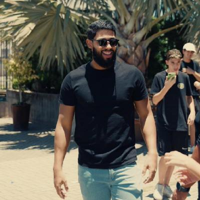

Mai. 2025 — atual
Analista Técnico Protheus
Totvs Atual
Atuação na implementação e customização de sistemas ERP Protheus, com análise técnica e desenvolvimento em AdvPL para atender às necessidades dos clientes.
Desenvolvedor de software · Brasil
Sou Natã Pires. Hoje trabalho com implantação de sistemas Protheus e desenvolvimento em AdvPL. Também crio projetos web e busco novos desafios em engenharia de software e desenvolvimento backend com .NET.

01 — Um pouco sobre mim
Minha jornada na programação começou em 2020. Desde então, venho explorando diferentes áreas da tecnologia — de infraestrutura e DevOps ao desenvolvimento de sistemas e soluções web.
Atualmente, trabalho como Técnico de Implantação na TOTVS, com sistemas Protheus. No dia a dia, atuo com análise de necessidades, implantação e customizações em AdvPL. Fora do trabalho, desenvolvo projetos freelance e sigo aprofundando meus conhecimentos em C# e .NET.
Gosto de entender o problema antes de pensar na solução. Isso vale tanto para um sistema interno quanto para o site de um negócio que precisa se apresentar melhor na internet.
Tem um projeto em mente?Ferramentas e tecnologias
02 — Caminho profissional
Aprendizado contínuo, colaboração e tecnologia aplicada a desafios reais.
Totvs Atual
Atuação na implementação e customização de sistemas ERP Protheus, com análise técnica e desenvolvimento em AdvPL para atender às necessidades dos clientes.
Cloud Dog
Experiência com pipelines de CI/CD, infraestrutura em nuvem e monitoramento de aplicações, contribuindo para a estabilidade e a escalabilidade dos serviços.
03 — Alguns projetos
01 / 04
04 — Próximo passo
Estou aberto a novos projetos freelance e a conversas sobre oportunidades em desenvolvimento de software.